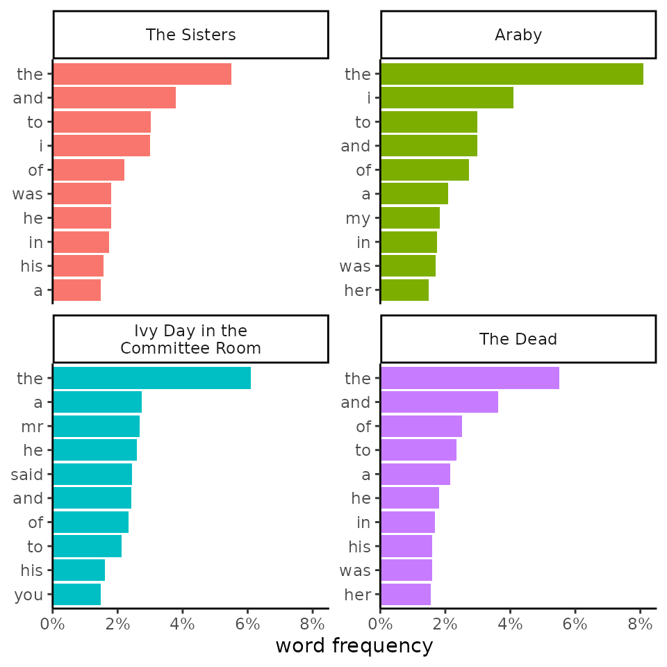

Customizing figures
Leveraging ggplot2
Source:vignettes/articles/05-customizing-figures.Rmd
05-customizing-figures.RmdPictures paint thousands of words, so figures are necessary for
communicating complex ideas about texts. While tmtyro provides polished
figures with visualize(), there’s always room for
refinement or reimagining.
Customizing visualize()
The standard tmtyro functions like add_frequencies()
prepare data that can be plugged directly into visualize().
Figures prepared this way are clean and ready for use in reports and
presentations. Tweaking colors, themes, and labels can further tailor a
visualization to an specific project, preference, or purpose, either
using built-in features or exploring ggplot2 for greater
flexibility.
Colors
tmtyro’s change_colors() function combines six ggplot2
functions into a single function with a single common interface.1
library(dplyr)
library(ggplot2)
library(tmtyro)
# Start by loading a corpus
corpus_dubliners <- get_gutenberg_corpus(2814) |>
load_texts() |>
identify_by(part) |>
standardize_titles()
# Choose a smaller subset of stories
select_titles <- unique(corpus_dubliners$doc_id)[c(1, 3, 12, 15)]
my_corpus <- corpus_dubliners |>
filter(doc_id %in% select_titles) |>
select(doc_id, word)
# standard output on left
word_freqs <- my_corpus |>
add_frequency() |>
visualize()
word_freqs
# custom colors on right
word_freqs |>
change_colors(palette = "Set1")
Themes
Themes built into ggplot2 or offered by an extension package provide
a quick option for making figures more your own. Just remember to use
the plus operator (+) when chaining functions from
ggplot2.
word_freqs +
theme_classic()
word_freqs |>
change_colors(palette = "Pastel1") +
theme_dark()
Labels
Some figures make more sense with a title or different axis labels.
The labs() function from ggplot2 makes it easy to adjust
these.
my_corpus |>
add_frequency() |>
# Setting color_y is necessary when defining colors by Y values
visualize(color_y = TRUE, reorder_y = TRUE) |>
change_colors(c(
"said" = "goldenrod",
"navy")) +
labs(
title = "Top Ten Words in Four Joyce Stories",
subtitle = "The use of “said” in “Ivy Day” suggests more dialogue.",
x = "prevalence",
y = "word")Recreating visualize() figures
Vectorized functions beginning get_...() and
is...() are not directly compatible with
visualize(), which is made for the standard workflow. But
the visualizations they support can be recreated with a bit of effort,
and the techniques learned in the process are transferable to other
custom visualizations. For further guidance and advanced techniques, the
ggplot2
documentation offers much more than can be shown here.
Corpus details
By default, a corpus prepared with load_texts() will
visualize() into a bar chart showing word counts for each
document. Preparing something manually is pretty simple, even if it
doesn’t compare well to the default output:
# default output on left
visualize(corpus_dubliners)
# manual output prepared with dplyr's count()
corpus_dubliners |>
count(doc_id) |>
ggplot(aes(
x = n,
y = doc_id)) +
geom_col()Among other things, visualize() preserves the order of
documents from top to bottom, adjusts labeling, and adds some settings
for theme and color. Alone, each is a simple change. But everything adds
up when polishing publication-ready graphs, from gridlines to label
spacing and number formatting:
corpus_dubliners |>
count(doc_id) |>
# reverse doc_id order
mutate(doc_id = forcats::fct_rev(doc_id)) |>
ggplot(aes(
x = n,
y = doc_id,
# add color
fill = doc_id)) +
geom_col(show.legend = FALSE) +
# adjust number format and shift y-axis labels
scale_x_continuous(
labels = scales::label_comma(),
expand = c(0, 0)) +
# change the theme background
theme_minimal() +
# adjust labels
labs(
x = "length (words)",
y = NULL) +
# adjust grid lines
theme(
panel.grid.minor.x = element_blank(),
panel.grid.major.y = element_blank(),
panel.grid.minor.y = element_blank())Word frequencies
When used after add_frequency(),
visualize() will prepare a faceted graph of some of the top
word frequencies for each document. To create something similar
manually, using mutate() with a vectorized function like
get_frequency() or get_tf_by(), it’s necessary
to prepare a table with distinct() and
slice_max() before piping it to ggplot():
corpus_dubliners |>
mutate(
n = get_tf_by(word, doc_id)) |>
# dplyr's `distinct()` drops repeated rows
distinct() |>
# dplyr's `slice_max()` takes the max n from each group
slice_max(
order_by = n,
by = doc_id,
n = 3) |> # show 3 words each
ggplot(aes(
x = n,
# `reorder_within()` reorders words for each facet
y = tidytext::reorder_within(
word,
by = n,
within = doc_id))) +
geom_col() +
facet_wrap(vars(doc_id), scales = "free") +
# `scale_y_reordered()` cleans up after `reorder_within()`
tidytext::scale_y_reordered()The resulting graph can be further customized with ggplot2’s standard
functions. After a function like reorder_within(), the Y
axis label especially needs some love.
Vocabulary richness
Default visualizations from add_vocabulary() are highly
customized. It isn’t hard to make a simple version after a vectorized
function like get_cumulative_vocabulary(), but this version
can lack readability:
corpus_dubliners |>
group_by(doc_id) |>
mutate(
vocab = get_cumulative_vocabulary(word),
progress = row_number()) |>
ungroup() |>
ggplot(aes(
x = progress,
y = vocab,
color = doc_id)) +
geom_line()Adding direct labels is often worth the effort:
dubliners_vocab <- corpus_dubliners |>
group_by(doc_id) |>
mutate(
vocab = get_cumulative_vocabulary(word),
progress = row_number()) |>
ungroup()
# Create a table of labels and locations
document_labels <- dubliners_vocab |>
group_by(doc_id) |>
summarize(
vocab = last(vocab),
progress = last(progress)) |>
ungroup()
dubliners_vocab |>
ggplot(aes(
x = progress,
y = vocab,
color = doc_id)) +
geom_line() +
geom_point(
data = document_labels) +
# avoid overlapping labels
ggrepel::geom_text_repel(
data = document_labels,
aes(label = doc_id)) +
theme(legend.position = "none")